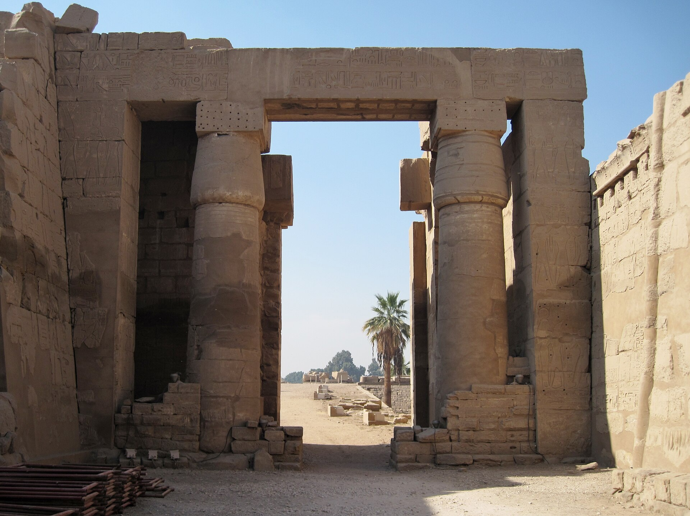

La división del reino tiene una fecha redonda en todos los manuales. Esa fecha no la dice ninguna piedra: es una suma.
Abra cualquier atlas bíblico por el mapa de los dos reinos y encontrará una fecha en la esquina: 930 a.C., o 931, o 922 según el atlas. La precisión tranquiliza. Da la impresión de que en algún archivo hay un documento que registra el año en que el reino de Salomón se rompió en dos, igual que hay documentos que registran el año en que cayó Constantinopla.
No hay tal documento. No existe ninguna fuente egipcia, asiria o babilonia que mencione la división del reino, ni que la fecha, ni que la dé por supuesta. La cifra sale entera del libro de los Reyes: se toman las duraciones de reinado que el texto atribuye a cada monarca de Judá y de Israel, se encajan unas con otras usando los sincronismos que el propio libro proporciona —«en el año vigésimo de Jeroboám, rey de Israel, comenzó a reinar Asá en Judá»— y se cuenta hacia atrás desde el primer punto que sí esté fijado por una fuente ajena.
El resultado depende de decisiones técnicas que el lector del atlas nunca ve. De si los escribas contaban el año nuevo en Tishri, en otoño, como se hacía en Judá, o en Nisán, en primavera, como en Babilonia. De si un rey que sube al trono a mitad de año estrena su «primer año» ese mismo otoño o el siguiente. Y sobre todo de cuántas corregencias se postulan: padres e hijos reinando a la vez, que el texto no menciona pero que hay que suponer para que los números cuadren. Cada suposición mueve la fecha unos años. Por eso Thiele llegó a 931, Galil a 930 y Albright a 922, trabajando todos con el mismo texto.
El primer momento de la monarquía israelita que una fuente externa fecha es el año 853 a.C., y no tiene nada que ver con la división. Es la batalla de Qarqar, en el norte de Siria, narrada en el Monolito de Kurkh de Salmanasar III: entre los aliados que se le opusieron figura «Ajab de Israel», con dos mil carros y diez mil soldados. Doce años después, en 841, el Obelisco Negro registra el tributo de «Iaua de la casa de Omri».
Es decir: entre la supuesta escisión y el primer dato externo hay casi ochenta años de silencio documental absoluto. Ocho reyes en el norte y cuatro en el sur, según la lista bíblica, sin una sola mención fuera de la Biblia. No es que las fuentes los contradigan: es que no existen.
Eso no convierte a esos reyes en ficticios. Los reinos pequeños de las tierras altas no interesaban todavía a las cancillerías de Nínive, y la epigrafía local del siglo X es casi inexistente. Pero sí cambia lo que un historiador puede afirmar. Y la mejor manera de verlo no es leer una lista, sino mirarla.
Dos tronos a la vez, de la escisión a la caída de Jerusalén. Arrastra el cuadro. El color no indica importancia: indica si el rey aparece en alguna fuente escrita fuera de la Biblia. Empieza en el siglo IX y luego arrastra hacia la izquierda, al siglo X.
Cronología convencional. Barra sólida: esquema de Thiele (1983). Trama a los extremos: hasta dónde llega el esquema de Galil (1996) cuando difiere. Ninguna de las dos es un dato externo: las dos son sumas de los reinados que da el libro de los Reyes. Los rombos marcan los ocho únicos puntos del periodo fechados por fuentes ajenas a la Biblia.
Al desplazarse hacia el siglo X, los dos carriles se quedan huecos. No hay ni un bloque relleno antes de Omri. Ese hueco es, en sí mismo, el estado de la cuestión: todo lo que la Biblia cuenta del reino unido y de su ruptura pertenece a un tramo del que no tenemos ninguna otra voz.
Hay un candidato a excepción, y conviene examinarlo con cuidado porque se cita mucho y se cita mal. 1 Reyes 14:25-26 dice que en el quinto año de Roboám subió contra Jerusalén «Sisac, rey de Egipto», y se llevó los tesoros del Templo. Sisac es identificable: Sheshonq I, fundador de la XXII dinastía, que reinó hacia 945-924 a.C. y realizó una campaña en el Levante en torno a 926-925. Eso no lo discute nadie.

El problema está en la lista. Jerusalén no aparece en la parte conservada del Pórtico Bubastita. Conviene decirlo sin rodeos, porque es frecuente encontrar la afirmación contraria. Sí aparecen decenas de topónimos del norte y del Néguev, lo que dibuja un mapa político interesante — Finkelstein lo ha usado precisamente así, como radiografía del Levante del siglo X. Pero la capital de Judá no está ahí.
Se ha propuesto leer en el anillo 29 la expresión «las alturas de David». La propuesta es de Kenneth Kitchen y hoy es minoritaria y mayoritariamente rechazada; no sirve como atestación de David. Y hay una cautela metodológica más de fondo: estas listas triunfales egipcias no son itinerarios de marcha. Comparadas con las de Tutmosis III, Seti I o Ramsés III, se revelan como composiciones ideológicas. Usarlas para fechar estratos de destrucción concretos del siglo X es un razonamiento circular, y buena parte de las cronologías construidas así en el siglo XX se apoyaban en ese círculo.
De la campaña queda, en el terreno, un solo objeto: un fragmento de estela con el cartucho de Sheshonq hallado en Meguido. Eso es todo. El relato de 1 Reyes —un saqueo del tesoro sin destrucción de la ciudad— es perfectamente compatible con el silencio egipcio, y probablemente conserva memoria de algo real. Compatible no es confirmado.
Que existieron dos reinos llamados Israel y Judá en los siglos IX y VIII a.C. no lo discute nadie: está en la estela de Mesa, en la de Tel Dan y en los anales asirios. Lo que está en disputa —y en disputa dura, entre arqueólogos que excavan los mismos yacimientos— es si esos dos reinos son el resultado de la escisión de una entidad anterior, o si nunca hubo tal entidad y la «monarquía unida» es una retroproyección literaria judaíta de época muy posterior.
No hubo monarquía unida en sentido estatal. La Jerusalén del siglo X era una aldea de las tierras altas, y las «puertas salomónicas» de Meguido, Jasor y Guézer son en realidad omridas, del siglo IX. El primer estado territorial pleno de la región es el reino del norte.
Baja moderadamente las fechas del Hierro IIA, pero mantiene que hubo un estado davídico-salomónico real y modesto en el siglo X. Posición intermedia, y probablemente la más comúnmente asumida como punto de partida.
Reafirman una entidad política unificada en las tierras altas en el siglo X, argumentando desde la homogeneización de la cerámica, la difusión de la casa de cuatro espacios y la destrucción de templos cananeos. Es la aportación reciente que ha reabierto el debate.
Khirbet Qeiyafa, Laquis y Khirbet al-Raʼi prueban un reino judaíta ya fortificado en el siglo X. Es la posición más alta dentro del campo académico, y la más contestada por Finkelstein.
Propone abandonar el término «monarquía unida» en singular y hablar de un sistema patrimonial, no de un estado territorial burocrático. Reformula la pregunta en vez de responderla.
Hay, en cambio, un punto en el que todos coinciden, y merece decirse porque suele confundirse con el anterior: nadie en el debate académico defiende el imperio de 1 Reyes 4-5, el que se extendería desde el Éufrates hasta la frontera de Egipto. No es que se considere improbable; es que ninguna de las posturas anteriores lo sostiene, incluidas las maximalistas. Esa descripción pertenece a otro género: es la manera en que el Cercano Oriente antiguo escribía sobre la grandeza de un rey fundador.
Es tentador leer todo esto como una demolición. No lo es. Lo que se disuelve al examinarlo de cerca no es la historia de Israel y Judá —que existieron, guerrearon, pagaron tributo y dejaron palacios y ostraca—, sino una fecha: la ilusión de que sabemos el año en que empezó. Y a cambio aparece algo más interesante que una fecha, que es la pregunta de por qué alguien, siglos después, necesitó contar que hubo un reino único y glorioso que se rompió por un pecado.
Esa pregunta tiene respuesta, y es el hilo del resto de la serie. Porque quien escribió el libro de los Reyes escribía desde Judá, desde el sur, desde el reino pequeño. Y tenía que explicar por qué el vecino del norte —más grande, más rico, más poderoso y con mejores tierras— había desaparecido de la faz de la tierra mientras Judá seguía en pie.
De ese vecino, y de la ironía de que el reino que la Biblia condena sea el que la arqueología encuentra, trata la entrega siguiente.
La cronología del sinóptico es convencional y no es un dato externo. La barra sólida sigue el esquema de E. R. Thiele, The Mysterious Numbers of the Hebrew Kings (3.ª ed., 1983); la trama de los extremos marca hasta dónde llega el de G. Galil, The Chronology of the Kings of Israel and Judah (Brill, 1996), cuando difiere. La columna de Galil se ha tomado de reproducciones secundarias y no de la edición original, lo que se advierte aquí por transparencia.
Sobre el Pórtico Bubastita y el carácter no itinerario de las listas triunfales egipcias, I. Finkelstein, ZDPV 118 (2002), y la discusión de K. A. Wilson sobre las listas de Tutmosis III, Seti I y Ramsés III. Sobre el estado de la cuestión de la monarquía unida, A. Faust y Z. Farber, The Bible’s First Kings (Cambridge University Press, 2025), y M. Keimer, Journal of Jewish and Ancient Religion (2021).
La clasificación de atestación externa de cada rey se basa en el Monolito de Kurkh (BM 118884), el Obelisco Negro (BM 118885), la estela de Mesa (Louvre AO 5066), la estela de Tel Dan, la estela de Tell al-Rimah, las inscripciones sumarias de Tiglat-pileser III (incluida la tablilla de Nimrud K.3751), los prismas de Senaquerib, el prisma de Nínive A de Esarhadón y las tablillas de raciones de Babilonia. Los casos discutidos están señalados como tales en la ficha de cada rey.